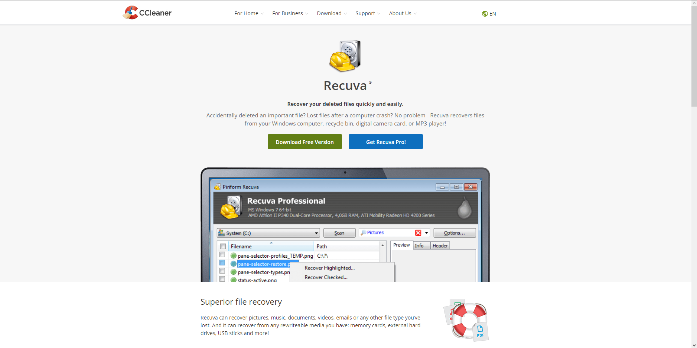
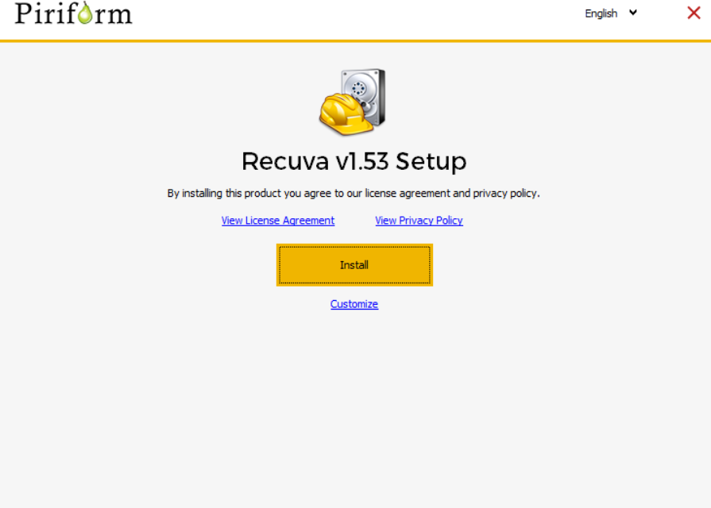
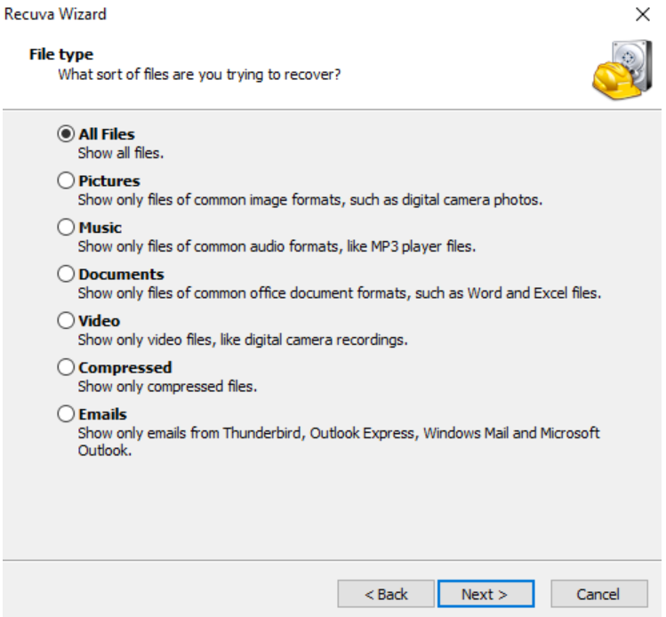
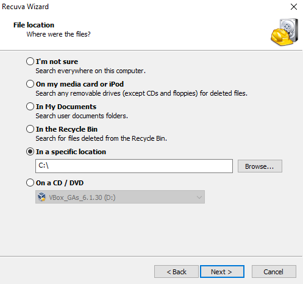
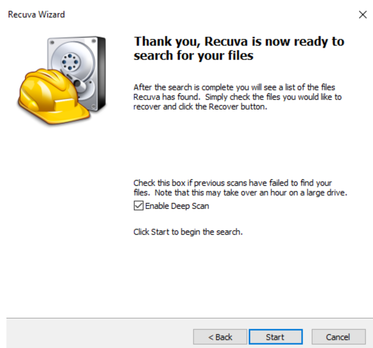

Recuva es un programa totalmente gratuito para recuperar archivos borrados o eliminados en nuestro PC con Windows
Para instalar Recurva nos dirigiremos a la página oficial de CClean
Primero nos descargaremos el .exe para instalar el programa:
Una vez ejecutado le daremos a "Instalar"
Seleccionaremos las opciones que deseemos, para los distintos ficheros que queremos restaurar
Buscaremos la ruta de la carpeta, dispositivo externo o interno en el que queramos restaurar sus ficheros
Marcaremos la casilla "Deep scan" y daremos click en start
